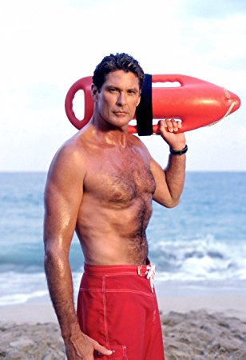
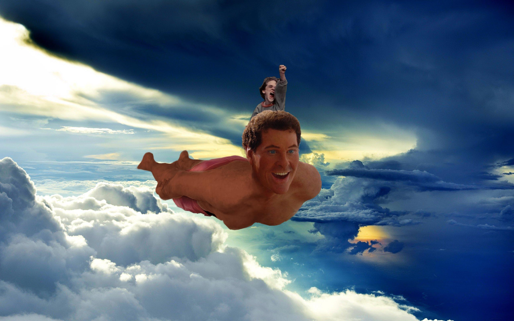

Background
David Michael Hasselhoff was born on July 17, 1952 in Baltimore, Maryland. He is English, Irish, and German. He is tall man at 6 feet and 4 inches. He is a well accomplished singer, actor, and producer. His nickname is "The Hoff". He attended Academy of Dramatic Arts in Michigan and the California Institute of the Arts in Valencia, California. He was very shy at the start of his career. He landed in a role on the Soap Opera, The Young and the Restless in 1973.
Career History
David Hasselhoff is widely known for two main shows he was in. He was in the the very popular shows Baywatch and Knightrider. In 1982,he landed a role in Knightrider. It became a huge success in the US and overseas. He quickly became popular during the show. Knight rider ended in 1986 but, in 1989 he porduced and acted in the show Baywatch. Baywatch at its peak was seen in 140 countries and had 1 billion views per week. He was also in the Guardians of the Galaxy 2, Shaka Luku, and Kung Fury. He has also been in broadway shows. He was also had a successful singing career in Europe.
Awesome Facts
- The World's most Watched man
- He was in the Spongebob movie
- He performed his own stunts in the movie Starcrash